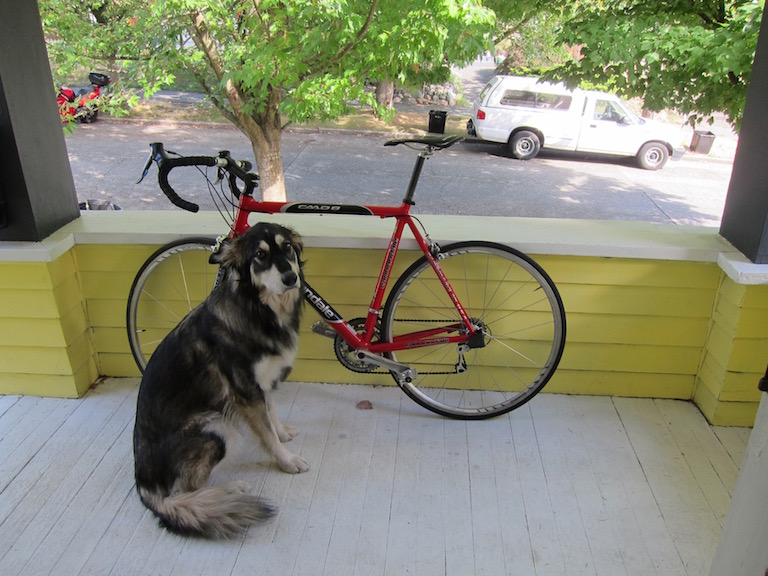

國立臺北科技大學資訊工程系計算機圖學實驗室
回頂端
系統(腳踏車)
系統(航照圖)
系統(人臉)
參考文獻
使用手冊
YOLO v2 使用手冊
作者網站 https://pjreddie.com/darknet/yolov2/
下載YOLO v2
可以用github下載，也可以用git，這次環境都在window及windows Store內的ubuntu執行
下載weight檔，並放在cfg資料夾
開啟powershell
輸入 Enable-WindowsOptionalFeature -Online -FeatureName Microsoft-Windows-Subsystem-Linux
安裝完成後，開啟Micorsoft Store並輸入Ubuntu
下載完畢後，開啟等待安裝
為了能夠執行檔案，必須先安裝GCC
輸入sudo apt-get update
輸入sudo apt-get upgrade
輸入sudo apt-get install build-essential
最後檢查版本
輸入gcc -v
輸入make -v
下載atom
安裝package
輸入platformio-ide-terminal
安裝完畢後，開啟YOLO(darknet-master資料夾)，開啟makefile檔
按下CTRL + ~ 開啟terminal，並輸入bash
輸入make，執行
執行完畢後，輸入./darknet detect cfg/yolov2.cfg yolov2.weights data/dog.jpg
原圖

最後可以知道預測的結果
在資料夾內也會產生圖片
結果圖片